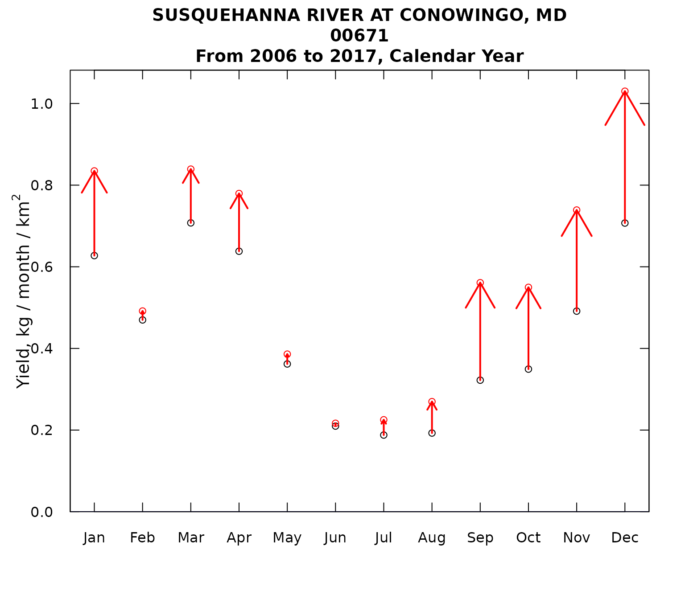
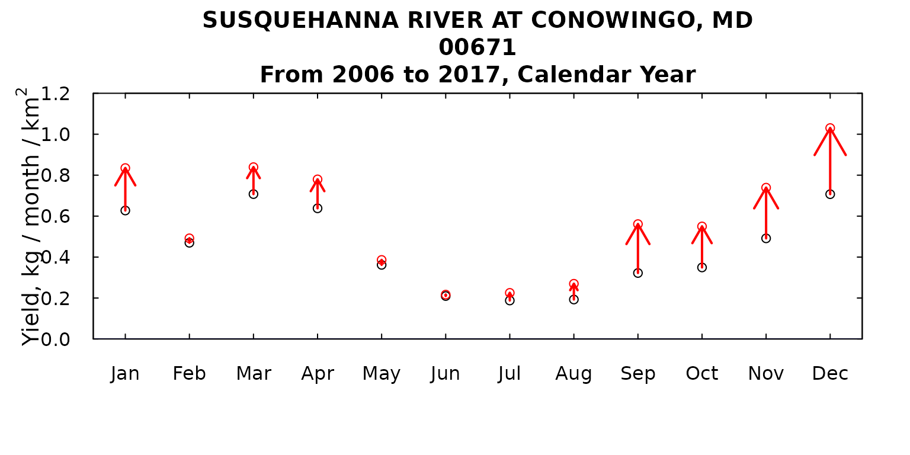
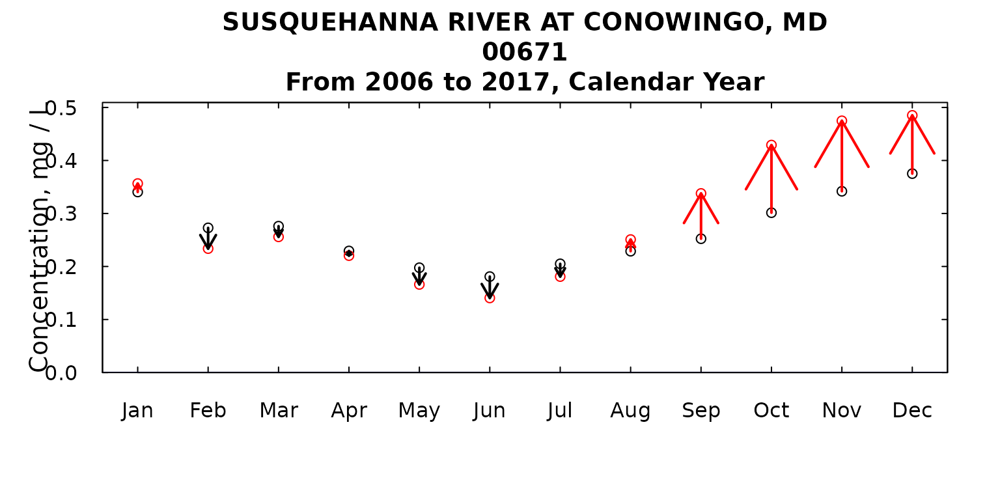

Introduction
This vignette is about producing a single type of figure. It is designed to examine the trends between a pair of years (using runPairs in EGRET terminology) to see what the size of the trend is for each of the twelve months of the year. It was used to make Figure 8 in Choquette et al., 2019. It is very helpful in trying to see if the trend is very specific to a certain part of the year (or even opposite in different parts of the year) versus being fairly similar across all the months.
As of EGRET version 3.0.7.2 (or CRAN version 3.0.8), the
output of runPairs includes information about the trends
per individual month. This output is attached via an attribute called
“byMonth”.
library(EGRET)
load("Conowingo.PO4.RData")
# source("runPairsMonths.R")
# source("plotOne.R")
pairResults <- runPairs(eList, windowSide = 0,
paStart = 1, paLong = 12,
year1 = 2006, year2 = 2017)##
## SUSQUEHANNA RIVER AT CONOWINGO, MD
## 00671
## Calendar Year
##
## Change estimates 2017 minus 2006
##
## For concentration: total change is 0.000904 mg/L
## expressed as Percent Change is +10.30 %
##
## Concentration v. Q Trend Component +10.30 %
## Q Trend Component 0 %
##
##
## For flux: total change is 0.116 million kg/year
## expressed as Percent Change is +31.48 %
##
## Concentration v. Q Trend Component +31.48 %
## Q Trend Component 0 %
##
## TotalChange CQTC QTC x10 x11 x20 x22
## Conc 0.0009 0.0009 0 0.0088 0.0088 0.0097 0.0097
## Flux 0.1164 0.1164 0 0.3698 0.3698 0.4862 0.4862To see the tabular output of the results, use the “byMonthly”
attribute from the runPairs result. Here we show the a few
of the months output:
| Year | Type | Jan | Feb | Mar | Apr | May | Jun | Jul | Aug | Sep | Oct | Nov | Dec |
|---|---|---|---|---|---|---|---|---|---|---|---|---|---|
| 2006 | Flux | 0.63 | 0.47 | 0.71 | 0.64 | 0.36 | 0.21 | 0.19 | 0.19 | 0.32 | 0.35 | 0.49 | 0.71 |
| 2006 | Conc | 0.34 | 0.27 | 0.28 | 0.23 | 0.20 | 0.18 | 0.21 | 0.23 | 0.25 | 0.30 | 0.34 | 0.38 |
| 2017 | Flux | 0.83 | 0.49 | 0.84 | 0.78 | 0.39 | 0.22 | 0.23 | 0.27 | 0.56 | 0.55 | 0.74 | 1.03 |
| 2017 | Conc | 0.36 | 0.23 | 0.26 | 0.22 | 0.17 | 0.14 | 0.18 | 0.25 | 0.34 | 0.43 | 0.47 | 0.49 |
Next, let’s plot the results using the custom function from above:
plotMonthTrend(pairResults)
We might want to make a few changes in the look of the figure, for example:
plotMonthTrend(pairResults,
yMax = 1.2,
arrowFactor = 0.6)
We could also look at concentration:
plotMonthTrend(pairResults,
arrowFactor = 1.2,
flux = FALSE)